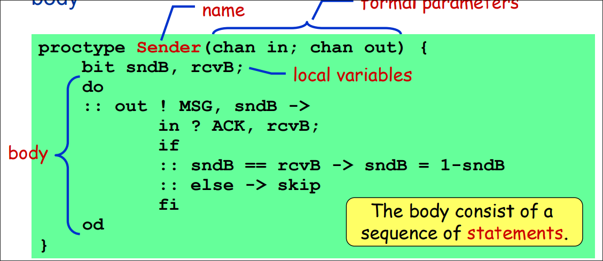
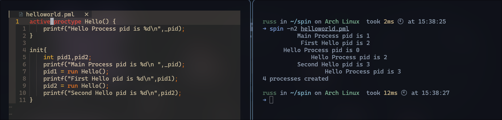
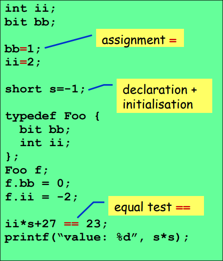

Spin和Promela简介
SPIN 简介
SPIN(Simple Promela Interpreter)是一个用于分析并发系统逻辑一致性的工具，尤其是数据通信协议（data communication protocols)。它充当Promela程序的解释器，并提供了模型检查功能。SPIN的主要任务是使用Promela模型探索系统的状态空间，以验证或验证系统是否满足指定的属性。SPIN可以检测到诸如死锁、活锁、不变性、通信问题等问题，这些问题在并发系统中可能非常复杂且难以手动验证。
Promela简介
Promela(Protocol/Process Meta Language)，是一种用于描述并发系统和协议的形式规范语言。它是用于编写系统模型的高级语言，通常与模型检查工具SPIN一起使用。Promela的特点包括描述并发进程、通信通道、同步和异步事件等的能力。它的语法相对简单，但能够表达复杂的并发行为。Promela的设计目标是使系统的行为规范化，以便通过模型检查来验证系统是否满足某些属性。Promela的语法类似于C语言，同时具有CSP(Communicating Sequential Processes，通信顺序进程)的特征(进程组合，避免死锁等)。
一个Promela的模型主要包括以下几部分：
类型声明(
typedeclaraions)信道声明(
channeldeclarations)变量声明(
variabledeclarations要注意的是，promela中的变和C语言中变量的作用域并不相同，promela变量中定义域是一个进程。
进程声明(
processdeclarations)init进程(程序的入口，相当于C语言中的main函数)
Promela中的进程
进程由 proctype定义，每一个进程之间互不影响，独立执行，互相之间也不影响执行效率。进程之间的通信通常通过全局变量(global variables)或是信道(channels)。 一个进程通常由以下几部分组成
- 进程名
- 形式化参数
- 局部变量声明
- 主体
下图为一个进程的示意图

下面为Promela的HelloWorld代码示例1 | active proctype Hello() { |
promela中的
active关键字相当于golang语言中的init函数，根据官方文档给出的说明，用active修饰的proctype需要在状态机初始化状态下就运行，也就是说在init进程运行前被active修饰的进程就在运行了，故上述代码输出的结果如下图所示。

Promela中的变量和类型
Promela中的变量类型和go语言差不多，共有8种类型，分别是
- bit $[0..1]$
- bool ${0,1}$
- byte $[0..255]$
- short $[-2^{16}-1,2^{16}-1]$
- int $[-2^{32}-1,2^{32}-1]$
- arrays
- structs 用typedef定义
- channels 进程之间用于通信的信道
promela中的变量初值均为0,变量可以通过=赋值，也可以通过传参赋值，也可以通过消息传递赋值。大部分C语言中变量支持的操作类型在Promela中都支持，包括移位操作。如下图所示。

Promela中的常见关键字
run：用于启动一个进程，比如例HelloWorld里面的Hello()进程就是用run启动的，就像调用函数一样。assert：用于断言，当assert后面的表达式为0值也就是false时，spin会立刻退出。printf：用于打印一些信息到标准输出。skip：skip被Spin解释器解释为常量1,也就是布尔量true,if：if语句在Promela中更像我们常见的switch语句，他的一般形式如下：1
2
3
4
5
6if
:: cond1 -> stats1...
:: cond2 -> stats2...
:: cond3 -> stats3...
:: cond4 -> stats4...
fi如果有多个cond语句均为真，则spin从其中随机抽取一个语句执行，如果所有的cond语句都不为真，则if语句阻塞。其中，
->运算法相当于;，按照惯例，在if表达式中将cond和stats用->分隔。else：通常在if语句中，用于执行当所有cond都不满足时执行的stats,如下列所示：1
2
3if
:: cond -> stats...
:: else -> other stats... //当cond不满足时，if也不会阻塞而是执行other statsdo：do语句在Promela中相当于golang语言中的select，他的选择策略与if语句一样，但是不会跳出语句，而是不断循环，重复选择,一般通过break跳出循环。他的一般形式如下：
1 | do |